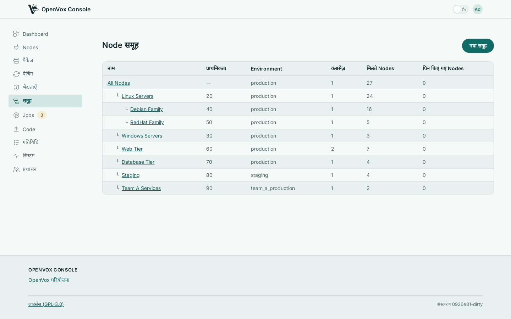

Node समूह उन Facts पर मेल खाते हैं जो आपके Nodes पहले से बताते हैं, और उत्तर openvox-server को उसी ENC अनुबंध से सौंपते हैं जिसकी वह अपेक्षा करता है।
वास्तविक Nodes से मेल खाने वाले समूह
Facts से नियम बनाइए — os.family = Debian, role = web — और कंसोल बता देता है कि अभी इसी क्षण वह कितने Nodes से मेल खाता है। जो नियम कुछ नहीं पकड़ता, वह तुरंत दिख जाता है, अगले Puppet रन की प्रतीक्षा नहीं करनी पड़ती।


वरीयता जो पृष्ठ पर ही पढ़ी जा सके
समूह एक वृक्ष बनाते हैं, और किसी समूह में केवल वही Nodes होते हैं जो उसके parent में हैं। जब किसी Node पर कई समूह लागू होते हैं, तो समूह अपने ऊपर के समूहों पर हमेशा भारी पड़ता है, और बाक़ी के बीच स्पष्ट प्राथमिकता निर्णय करती है। यदि इससे कभी कोई child ऊँची प्राथमिकता वाले parent को पलट दे, तो कंसोल समूह पर यह बता देता है, आपको स्वयं पता लगाने के लिए नहीं छोड़ता।
आपके अपने कोड से क्लासें
कंसोल आपके deploy किए गए कोड द्वारा परिभाषित क्लासें पढ़ता है, इसलिए समूह हाथ से टाइप किए नामों के बजाय एक picker और हर क्लास के पैरामीटरों के लिए typed inputs देता है। समूह में नामित जो क्लास अब मौजूद नहीं है, उसे चिह्नित किया जाता है, चुपचाप हटाया नहीं जाता।
समूहों में कॉन्फ़िगरेशन डेटा भी हो सकता है, जिसे Nodes आपकी control रिपॉज़िटरी के Hiera डेटा से पहले lookup() से पढ़ते हैं — इसलिए Nodes के किसी समूह के लिए बिना commit के कोई मान सेट किया जा सकता है।
जिस Node ने कभी check in नहीं किया, उसके पास अभी कोई Facts नहीं हैं, इसलिए कोई भी Fact-आधारित नियम उससे मेल नहीं खा सकता। वह फिर भी All Nodes में है, और यदि उसे पहले रन से पहले और कुछ चाहिए, तो उसे सीधे उसके नीचे के किसी समूह में पिन किया जा सकता है।
स्वयं कीजिए
Facts से मेल खाने वाले या नाम से पिन किए गए Node समूहों के एक वृक्ष से तय कीजिए कि हर Node को कौन-सी क्लासें, पैरामीटर और Environment मिलें।
OpenVox Console कंटेनर इमेजों के रूप में आता है, जो हर push पर amd64 और arm64 के लिए बनती हैं, और एक अकेली बाइनरी के रूप में भी। इंस्टॉल गाइड आपको खाली होस्ट से एक चालू परिनियोजन तक ले जाते हैं - openvoxserver, openvoxdb, Postgres और कंसोल - कंटेनरों से या पैकेजों से।